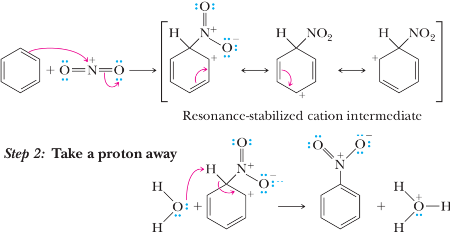
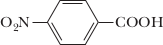
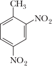
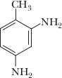
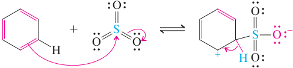

Nitration and sulfonation of Benzene
In two other typical electrophilic substitutions of benzene, the electrophiles are the nitronium ion (NO2+), leading to nitrobenzene, and sulfur trioxide (SO3), giving benzenesulfonic acid.
Benzene is subject to electrophilic attack by the nitronium ion
To bring about nitration of the benzene ring at moderate temperatures, it is not sufficient just to treat benzene with concentrated nitric acid. Because the nitrogen in HNO3 has little electrophilic power, it must somehow be activated. Addition of concentrated sulfuric acid serves this purpose by protonating the nitric acid. Loss of water then yields the nitronium ion, NO2+, a strong electrophile, with much of its positive charge residing on nitrogen, as shown in the electrostatic potential map.
The nitronium ion, with its positively charged nitrogen, then attacks benzene.
An important feature of nitration is that the resulting nitro group can be reduced to a primary amino group, —NH2, by hydrogenation in the presence of a transition metal catalyst such as nickel, palladium, or platinum under fairly mild conditions.
|  4-Nitrobenzoic acid | + | 3H2 | Ni ⟶ (3 atm) |  4-Aminobenzoic acid | + | H2O |
As illustrated by this example, neither a —COOH nor an aromatic ring is reduced under these conditions. Catalytic reduction of a nitro group has the potential disadvantage, however, that other susceptible groups such as carbon-carbon double bonds and aldehyde and ketone carbonyl groups may also be reduced.
Alternatively, a nitro group can be reduced to a primary amino group by a metal in aqueous acid. The most commonly used metal-reducing agents are iron, zinc, and tin in dilute HCl. The reductant is electrons from the metal. When reduced
with a metal and hydrochloric acid, the amine is obtained as a salt, which is then treated with strong base to liberate the free amine.
|  2,4-Dinitrotoluene | + | 3H2 | Fe, HCl ⟶ C2H5OH, H2O | 4-methylbenzene-1,3-diamine,dihydrochloride | NaOH, H2O ⟶ |  4-Methyl-1,3-benzenediamine (2,4-Diaminotoluene) |
The reduction of a nitro group to an amino group is important because the amino group cannot be substituted directly onto an aromatic ring; it must be done by this indirect method.
Sulfonation is reversible
Sulfonation of benzene is carried out using concentrated sulfuric acid containing dissolved sulfur trioxide (fuming sulfuric acid). Concentrated sulfuric acid does not sulfonate benzene at room temperature. However, a more reactive form, called fuming sulfuric acid, permits electrophilic attack by SO3. Commercial fuming sulfuric acid is made by adding about 8% of sulfur trioxide, SO3, to the concentrated acid. Because of the strong electron-withdrawing effect of the three oxygens, the sulfur in SO3 is electrophilic enough to attack benzene directly. Subsequent proton transfer results in the sulfonated product, benzenesulfonic acid.

|  | −H+ ⇌ | +H− ⇌ |
|
Aromatic sulfonation is readily reversible. The reaction of sulfur trioxide with water to give sulfuric acid is so exothermic that heating benzenesulfonic acid in dilute aqueous acid completely reverses sulfonation.
Hydration of SO3
|
| +H2O ⟶ H2SO4 + heat |
Reverse Sulfonation: Hydrolysis
|
|
H2O, catalyst H2SO4 100 °C ⟶ |
 | + | H2SO4 |
The reversibility of sulfonation may be used to control further aromatic substitution processes. The ring carbon containing the substituent is blocked from attack, and electrophiles are directed to other positions. Thus, the sulfonic acid group can be introduced to serve as a directing blocking group and then removed by reverse sulfonation. Synthetic applications of this strategy will be discussed in Section 16-5.
Benzenesulfonic acids have important uses
Sulfonation of substituted benzenes is used in the synthesis of detergents. Thus, long-chain branched alkylbenzenes are sulfonated to the corresponding sulfonic acids, then converted into their sodium salts. Because such detergents are not readily biodegradable, they have been replaced by more environmentally acceptable alternatives.
Another application of sulfonation is to the manufacture of dyes, because the sulfonic acid group imparts water solubility.
Sulfonyl chlorides, the acid chlorides of sulfonic acids (see Section 9-4), are usually prepared by reaction of the sodium salt of the acid with PCl5 or SOCl2.
Sulfonyl chlorides are frequently employed in synthesis. For example, recall that the hydroxy group of an alcohol may be turned into a good leaving group by conversion of the alcohol
into the 4-methylbenzenesulfonate (p-toluenesulfonate, tosylate;).
Sulfonyl chlorides are important precursors of sulfonamides, many of which are chemotherapeutic agents, such as the sulfa drugs discovered in 1932. Sulfonamides are derived from the reaction of a sulfonyl chloride with an amine. Sulfa drugs specifically contain the 4-aminobenzenesulfonamide (sulfanilamide) function. Their mode of action is to interfere with the bacterial enzymes that help to synthesize folic acid, thereby depriving them of an essential nutrient and thus causing bacterial cell death.